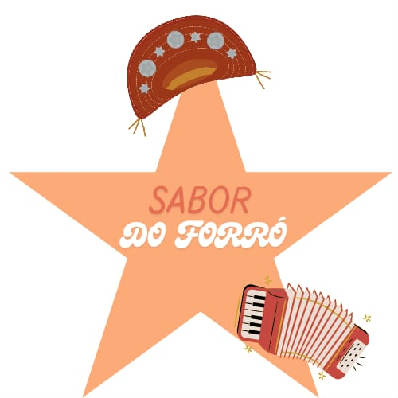

Nossos Produtos
Dindins
Deliciosos dindins goumerts. Uma explosão de sabor em cada mordida.
R$ 5,00

Empadão
Nosso empadão nordestino com recheio especial de frango. Massa sequinha e sabor inigualável.
R$ 7,00

Sucos Naturais
Refrescantes sucos naturais das frutas do Nordeste: maracujá, acerola, goiaba e muito mais.
R$ 3,00
Sobre Nós
O Sabor do Forró nasceu do amor pela culinária nordestina e da vontade de compartilhar os sabores autênticos do Nordeste com todos.
Nossos produtos são preparados com ingredientes selecionados e receitas tradicionais, tudo isso enquanto ouvimos os maiores hits do nordeste🎶.
Venha experimentar nossos dindins, empadões e sucos e sentir o verdadeiro sabor do forró!
